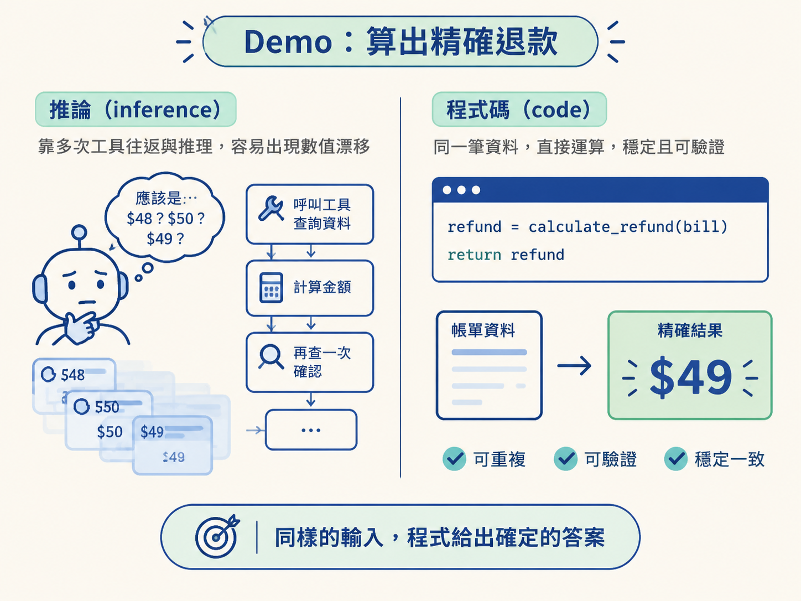
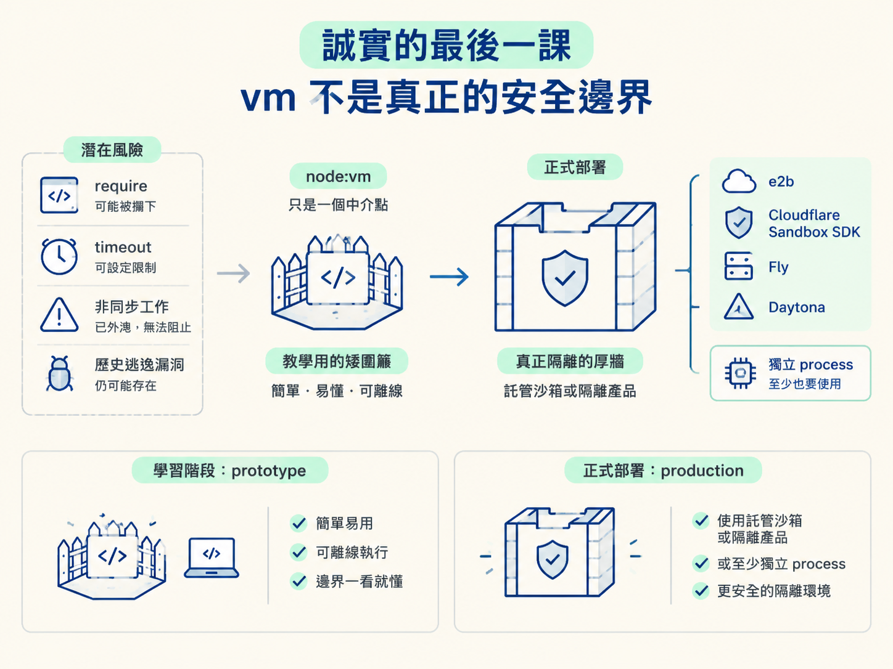

node:vm 不是安全邊界當 agent 需要處理金額或日期時，直接讓模型推論，答案可能會漂移。這一節會用一個退款案例看見：讓模型先寫程式，再交給程式執行，為什麼更可靠。
你也會弄清楚 node:vm 能攔下什麼、攔不下什麼，以及為什麼它只是中介點，不是真正的安全邊界。最後，你要能判斷：什麼情況適合用自己的沙箱，什麼情況該交給託管沙箱。
工具建好之後，模型不會自動知道它們存在。你得在 system prompt 裡明確告訴 agent：只要需要算術，就呼叫 run_code；程式要包在 async 函式裡，並且可以使用 getCharges 與 searchKnowledgeBase 這兩個 helper。
這段 prompt 沒有所謂標準答案。重點只有兩個：讓模型知道有 run_code，也讓它知道什麼時候該用。工具描述比較像給模型看的護欄；護欄要放在哪裡可以調整，措辭本身不是固定格式。
拿一個 billing prompt 來實測，故意挑一個不用 code mode 就很麻煩的任務：
「幫我找出重複扣款的客戶，告訴我該退多少錢（美元，精確數字）。」
agent 接到任務後，會走完一整輪流程：先 classify，再呼叫 run_code，接著真的寫出一支程式。
這支程式會用 await tools.getCharges(...) 撈帳單，透過 console.log 印出資料，找出同一客戶在同一天重複扣款的那筆，再查詢知識庫中的退款政策，最後用 return 回傳結果。
答案是——精確的 $49。而且這個 $49 來自程式的 return 值，不是模型看著 log 猜出來的。整個流程也比讓模型在幾十次搜尋與算術的工具往返中慢慢推理快得多。

這裡最反直覺的地方是：模型明明會算，為什麼還要讓它寫程式？
因為模型的推理是機率性的。它可以很會組織步驟，卻不適合當計算機使用。
所以可以記住這句話：模型擅長寫程式，不擅長數數，那就讓它寫程式。
把資料輸入一段確定性的程式碼，結果就能重複執行，也能驗證。相同輸入交給同一段程式，不會像推論一樣偶爾得到不同答案。
模型寫出的程式可能會卡住。要避免它拖住整台 server，timeout 可以放在呼叫層或 runtime 層控制：
runTool 的 switch 中呼叫 runInSandbox 時，傳入 options.timeoutMs。withTimeout 會建立一個新的 promise，時間到了就 reject；它的行為就像 Promise.race，先完成的那個結果獲勝。test-sandbox課程附了一支 test-sandbox.ts。它不需要透過 agent，而是直接驅動 runInSandbox，把沙箱提供的四種行為實際跑一遍：
tools API 撈資料，並算出結果。while (true) {}：被 timeout 攔下來。require("fs")：因為 context 裡根本沒有 require，所以會被封鎖。第四點是 code mode 能自我修正的關鍵。錯誤不能只是一段模糊文字；它需要有明確的 error 訊息，以及清楚的 ok: false。模型讀得懂這種結果，才知道自己錯在哪裡，也才有機會再寫一次。
vm 不是真正的安全邊界整節最該記住的一句話是：node:vm 是中介點（mediation point），不是真正的安全邊界。
它可以攔住 require、設定 timeout，也可以只提供白名單中的能力。但它做不到真正隔離。例如，它殺不掉已經外洩出去的非同步工作；而且歷史上也曾出現過可以從中逃逸的漏洞。
課堂使用 node:vm，是因為它簡單、可以離線執行，而且邊界一看就懂。但真的要部署時，應該換成託管沙箱或隔離產品，例如 e2b、Cloudflare Sandbox SDK、Fly、Daytona 這一類；至少，也要使用獨立 process。

最後把判斷收斂成一句話：學習與 prototype 階段，自己做 node:vm 沙箱又快又清楚；一旦 agent 要進入生產環境，沙箱這層就該交給專門的託管產品。
這和你自己的 runtime（OryxOS / Java）是同一套邏輯：先自己推導出邊界的雛形，真正上線時，再把它轉換成平台應負責的能力。